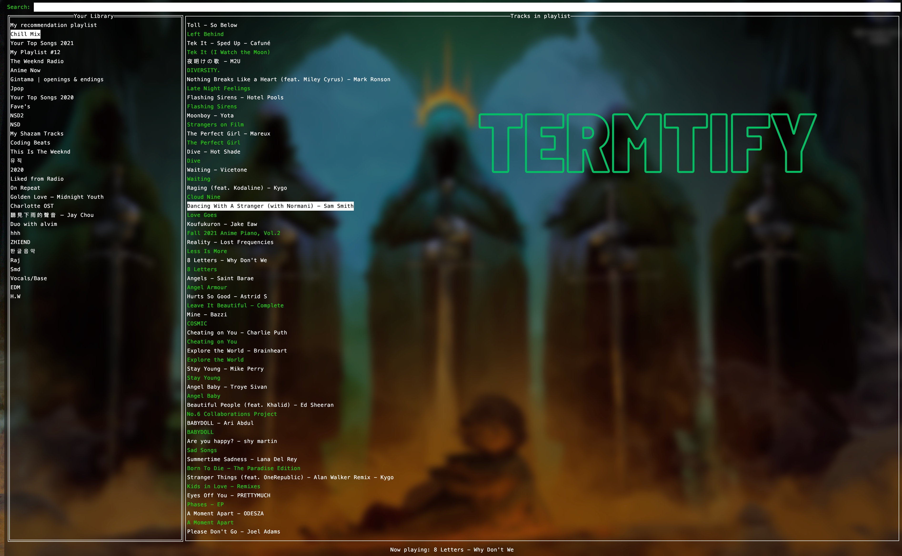

Termtify
Termtify is a Terminal based spotify application which uses spotify API to bring your favourite music player right in your terminal.The application uses the Spotify API to authenticate users and access their playlists, tracks, and albums. Users can search for songs, play tracks, and create playlists directly from the terminal. Key features include playing music, searching for tracks, and viewing album.
The application is built using the Tview library in Go and is designed to be lightweight and easy to use, with a simple and intuitive interface.
Github
Challenges Faced
The main challenge faced during the development of this project was working with the Spotify API and implementing the authentication flow. The API requires users to authenticate using OAuth 2.0, which involves obtaining an access token and refreshing it periodically. Implementing this flow in a terminal-based application was challenging due to the lack of a web browser for user interaction.Another major problem was handling the audio playback in the terminal. While there is no direct or official way to play media right in the terminal, there are few open source projects like LIBRESPOT and SPOTIFYD which can act as a spotify client so we can play music in the terminal.
For now the application utilises the API to play music to any active spotify devices connected to the user's account. But in future i plan to implement the audio playback in the terminal itself.